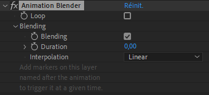

Animation Blender
Animation Blender

The Animation blender is a tool to animate using markers to trigger animations.
In a composition, you can have several animations, one after each other.
The Animation blender is a simple controller (a layer) where you add markers which will trigger these animations.
The Animation blender is able to blend the animations together during transitions right after a marker, and it’s also able to loop the animations after they have been triggered, if you need.

Hint
Once the Animation blender have been set up, a simple tool in the Animation panel (Tools tab) of Duik can be used to easily set the markers to trigger animations.

There are two things which need to be set up: the animations (the animated properties), and the Blender controller itself.
The first part of the panel allows to quickly set the animations, while the second part is used to set up the Blender.
Animations setup
As soon as you have animated what you want to trigger, you have to set some markers in the composition to define when these animations begin and end. Each marker must have a name (which can be whatever you want), and a duration which is exactly the duration of your animation.

Warning
With versions of After Effects more recent than 14.0 (CC2017), these markers can be set on the composition itself, but with older versions, they have to be set on a layer named exactly Duik | Animation blender.
To help you to set these markers, you can set their name in Duik, and then click the Set button. This will create a marker where it should be, using the work area of the composition to set its time and duration in a single click.
Blender Setup
Setting the composition up for the Blender is easy:
- Select the composition containing the animations you want to set up in the menu. You can use the eyedropper to quickly get the active composition.
- Select the composition from where you want to animate using the Animation Blender. It can be the same composition as the rigged one if you wish.
- You can choose to rig all animated properties, or only the selected ones. Setting up only the selected properties allows to have several controllers for the same composition, thus allowing to rig very complex things…
- Click on the Blend! button to set everything up.
Use
To use the Blender, you just have to add markers with the name of the animation on the controller layer. Each marker will trigger the corresponding animation.

Caution
Their name have to be exactly the same, and it is case sensitive.
A simple tool in the Animation panel (Tools tab) of Duik can be used to easily set these markers, but you can also do it directly inside After Effects (see the shorcuts below).

There are a few options in the effects of the controller, to loop the animation, and to control how they may blend during transitions. If they have to blend, you can control if they have to blend, the duration of the transition (in seconds), and how it is interpolated. The blend happens after the marker triggering the animation, between the animation of the marker and the previous one.
To temporarily disable the Blender, you can disable the effect on the controller. This makes it easy to add new animations or modify the existing ones.
Shortcuts for markers in After Effects
Caution
Some of these shortcuts are not available in all versions of After Effects, but were added in the latest versions.
*adds a new marker on the selected layer, or on the composition without any selected layer.Alt + *opens the marker editor window before adding the marker, where you can set a comment.Alt + Clickon a marker changes its duration.Ctrl + Clickon a marker removes it.Shift + 1/2/3...9adds a marker with the corresponding number as its comment.